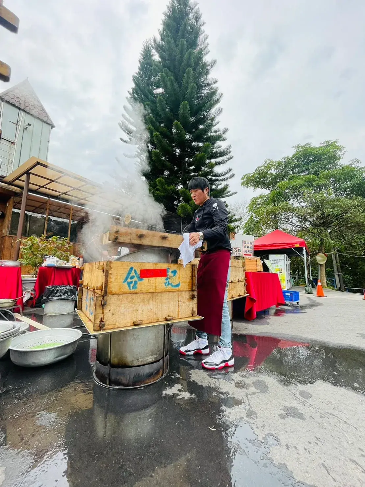

中式宴席——不管是壽宴、彌月、訂婚宴，還是家族團聚——向來重視「排場」與「禮數」，菜色的順序、道數與吉祥寓意都有一套約定俗成的邏輯。但傳統辦桌需要租借場地、餐廳合菜又缺乏隱私與客製彈性，這也是近年越來越多家庭選擇「到府中式私廚」的原因——既保留傳統宴席的儀式感，又能享有在家宴客的自在與隱私。
中式宴席菜色通常以雙數道數呈現（如 8 道、10 道、12 道），取「好事成雙」之意。基本架構包含：冷盤開胃、主要海鮮、主要肉類（多為整隻或整塊呈現，象徵完整圓滿）、湯品、主食與甜點收尾。每一道菜的順序並非隨意安排，而是依照「輕—重—輕」的節奏，讓賓客的味蕾與飽足感循序漸進。
中式宴席很重視菜色的諧音與寓意——例如魚（年年有餘）、髮菜蠔豉（發財好市）、長年菜或麵線（長壽綿延）。壽宴會特別重視「壽桃」、「長壽麵」這類象徵長壽的元素；彌月宴則常見「油飯」、「紅蛋」象徵添丁與喜氣。建議在規劃菜單時，先確認宴會性質（壽宴、彌月、喬遷、家族團聚），主廚才能挑選合適的吉祥菜色。
相較於傳統辦桌的固定套餐，到府私廚可以依照賓客的實際飲食需求做彈性調整——例如長輩需要少油少鹽、部分賓客吃素或有過敏原，這些細節在傳統合菜餐廳較難單獨處理，但到府私廚可以針對個別賓客客製化調整份量與烹調方式。
長輩壽宴：建議以「長壽麵」、「壽桃」等傳統元素為主軸，菜色偏向溫潤養生取向，避免過於厚重油膩，並保留家族合影與敬酒的時間安排。
彌月／收涎宴：常見以油飯、紅蛋、雞酒等傳統彌月元素為主，適合搭配較輕鬆活潑的用餐氣氛，人數規模彈性較大，從家族小聚到親友大型聚會都適合。
家族團聚（如尾牙、春節、清明祭祖後聚餐）：菜色可以更貼近家常但精緻化，重點在於讓不同世代的家人都能找到喜歡的菜色，建議葷素搭配比例拉高，並保留一定的傳統年菜元素。
中式宴席的圓桌文化，通常以 10-12 人為一桌的規劃邏輯，若家中空間有限，建議提前與主廚討論場地尺寸，評估適合的桌數與座位安排。到府私廚團隊會攜帶專業爐具現場料理熱炒與湯品，確保上桌時仍保有最佳的溫度與香氣，這是傳統合菜餐廳外帶或宴會廳集中出餐較難做到的細節。
舒苑飲食文化｜Luxury Private Chef提供完整的中式宴席規劃服務，從菜色設計、吉祥寓意搭配到現場料理與服務，讓您在家中也能辦出一場體面而溫馨的中式宴席。無論是長輩壽宴、彌月喜宴或家族團聚，都歡迎與我們討論您的場合性質與人數規模，讓主廚為您量身設計最合適的菜單。更多菜單選擇可參考 中式套餐 頁面。
告訴我們您的場合與人數，讓主廚為您設計合適的中式宴席菜單。